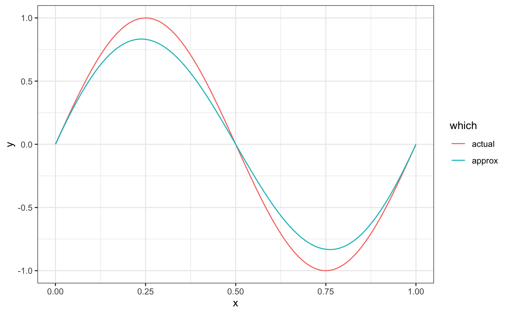
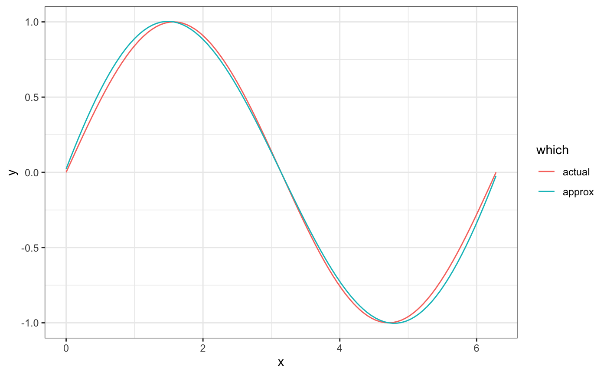
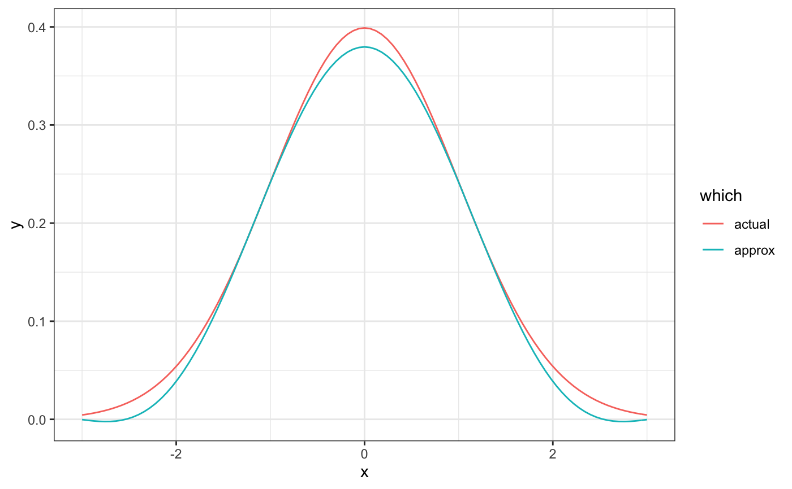

Bernstein polynomial approximation
bernstein_approx(f, n, lower = 0, upper = 1, indeterminate = "x") bernsteinApprox(...)
| f | the function to approximate |
|---|---|
| n | Bernstein polynomial degree |
| lower | lower bound for approximation |
| upper | upper bound for approximation |
| indeterminate | indeterminate |
| ... | ... |
a mpoly object
if (FALSE) # visualize the bernstein polynomials library(ggplot2); theme_set(theme_bw()) library(reshape2) f <- function(x) sin(2*pi*x) p <- bernstein_approx(f, 20) round(p, 3)#> 6.18 x - 5.747 x^2 - 31.108 x^3 + 27.287 x^4 + 32.866 x^5 - 29.411 x^6 - 10.328 x^7 + 10.999 x^8 + 0.755 x^9 - 1.66 x^10 + 0.074 x^11 + 0.105 x^12 - 0.01 x^13 - 0.003 x^14x <- seq(0, 1, length.out = 101) df <- data.frame( x = rep(x, 2), y = c(f(x), as.function(p)(x)), which = rep(c("actual", "approx"), each = 101) )#>#> 1.1704 x - 0.1818 x^2 - 0.1466 x^3 + 0.021 x^4 + 0.0039 x^5 - 0.0006 x^6 + 0.023x <- seq(0, 2*pi, length.out = 101) df <- data.frame( x = rep(x, 2), y = c(sin(x), as.function(p)(x)), which = rep(c("actual", "approx"), each = 101) )#>#> -0.1624 x^2 + 0.0262 x^4 - 0.002 x^6 + 0.0001 x^8 + 0.3796x <- seq(-3, 3, length.out = 101) df <- data.frame( x = rep(x, 2), y = c(dnorm(x), as.function(p)(x)), which = rep(c("actual", "approx"), each = 101) )#>